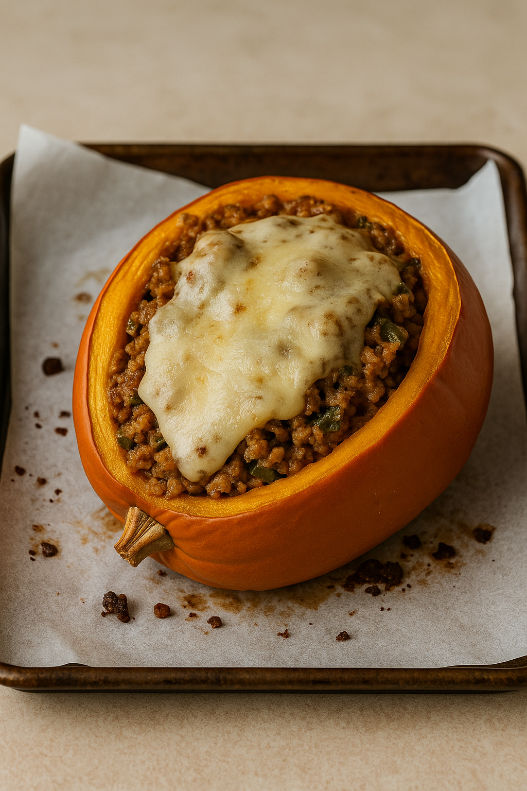

Savory Stuffed Pumpkin
Home

Description
A warm Autumnal dinner! Savory stuffed sugar pumpkin with ground turkey and quinoa blend.
Original recipe © Elizabeth Bey. AI generated photo.
Ingredients
- 1 sugar pumpkin
- 1 lb ground turkey
- 1 box quinoa
- 1 slice swiss cheese
- 1/4 tsp ground cumin
- 1 tsp ground clove
- 1 tsp ground sage
- Olive oil for cooking
Steps
- Preheat oven to 400 degrees.
- Slice the top off the sugar pumpkin and scoop out the seeds.
- Brush the inside with a little olive oil and roast 20–25 minutes, just until tender.
- While it roasts, brown the ground turkey in a pan with a drizzle of olive oil.
- Stir in cooked quinoa, cheese, and all spices until well combined.
- Spoon the mixture into the pumpkin, top with extra cheese if desired.
- Return to the oven and bake another 10–15 minutes until hot and lightly browned on top.